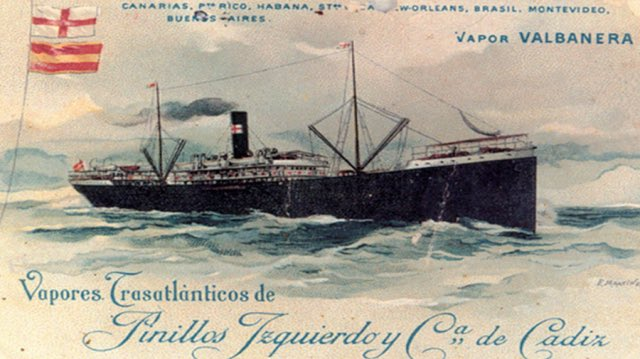
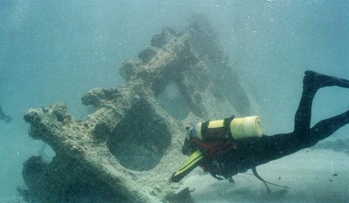

Los Hilos de Monik
El Valbanera
Publicado el 30 de agosto de 2020 - 15 tweets - Hilo original en Twitter
1
Tan solo 7 años después de la tragedia del Titanic, Cuba fue testigo de un hundimiento de similares proporciones.
Un ciclón, tripulación inexperta, un golpe de suerte para muchos que se bajaron antes de tiempo, y una desaparición misteriosa.
Esta es la historia del Valbanera.
2
Con capacidad para transportar 1,200 pasajeros, el buque Valbanera (Ruta: Barcelona-Canarias-Puerto Rico-Cuba-Galveston) naufragó el 10 de septiembre de 1919 a las afueras de La Habana.
Es considerada la mayor catástrofe naval en tiempos de paz para España.
¿Qué pasó?
3
La compañía Pinillos Izquierdo (dueña del barco) reemplazó a casi toda la tripulación tras darse un brote de gripe española en el último viaje. Esta nueva tripulación no conocía bien el mar Caribe.
Además, a la compañía ya se le habían hundido otros dos barcos recientemente.
4
El 9 de agosto de 1919 sale el Valbanera desde Barcelona, y fue recogiendo pasajeros en otros puertos. En total, cargaba 975 personas incluyendo a los tripulantes.
El 9 de agosto de 1919 sale el Valbanera desde Barcelona, y fue recogiendo pasajeros en otros puertos. En total, cargaba 975 personas incluyendo a los tripulantes.
5
El 5 de septiembre el buque llega a Santiago de Cuba, donde casi 500 personas se bajaron.
Lo curioso: muchos de los que se quedaron en Santiago tenían pasaje para La Habana, pero decidieron no continuar (Uno de ellos, por quedarse tomando cerveza)
6
Estando aún en el puerto, el día 7 el Observatorio Nacional de Cuba difunde un parte sobre un ciclón detectado en el Caribe y alerta que se debe tener cuidado "del meridiano de La Habana para el Oeste".
No obstante, el barco zarpa rumbo a La Habana con 488 personas a bordo.
7
Una de las razones es que el Capitán Ramón Martín Cordero no estaba familiarizado con la zona.
A las 7:50am del 9 de septiembre, envía un telegrama al padre Lorenzo Gangoiti, director del Observatorio Metereológico del Colegio de Belén.
Durante 25 min le respondieron...
8
...pero nunca contestó.
La noche del 9 de septiembre el ciclón entra a La Habana, hundiendo incluso barcos fondeados en la bahía.
Esa misma noche el Valbanera, frente al Morro, envía otro mensaje morse, pidiendo asistencia.
9
Pero les respondieron (usando señales lumínicas) que los prácticos del puerto no podían salir. No logró entrar en la bahía.
Los periódicos estadounidenses de la época llegaron a decir que se le había negado asistencia al barco debido a que...
10
...entre sus pasajeros había un grupo grande de prostitutas. Aún hoy, al pecio del naufragio se le conoce como "The Wreck of the Whores"
Al día siguente, no había señal del barco en las afueras de La Habana. Aún el 12, la compañía seguía sin informar del destino del barco.
11
Ese mismo día, un operador de la Estación Radiográfica de Key West detectó, sobre el mediodía, una comunicación de un barco que se identificó como el Valbanera, e incluso dio su código de identificación: JTHC. El operador corrió a buscar a sus jefes, pero no hubo más contacto
12
A esa misma hora, la Estación Radiográfica de La Habana captó un mensaje similar.
Los cañoneros de la flota cubana Patria, Yara, Martí y Maceo seguían buscando el buque. Canarios residentes en La Habana intentaron salir también en un remolcador a buscar a sus parientes.
13
El 19 de septiembre, un buque de la Armada estadounidense divisó el mástil del Valbanera. Se había hundido en las proximidades de Key West.
Según reportes de un capitán, todos los botes salvavidas estaban a bordo.
No se encontró a ningún pasajero.

14
408 de las 488 víctimas eran canarios.
La compañía Pinillos continuó callada, e incluso se especuló sobre el rescate de supervivientes. Nunca se hizo investigación oficial, y por meses la compañía se negó a facilitar la lista de pasajeros que desembarcaron en Stgo.
15
Al Valbanera se le conoce como "el Titanic canario" y actualmente el pecio puede verse si se bucea en la zona.
Aunque con triste desenlace, fue también la primera vez que Cuba empleó la radiotelegrafía para dar un aviso de ciclón en tiempo real.
